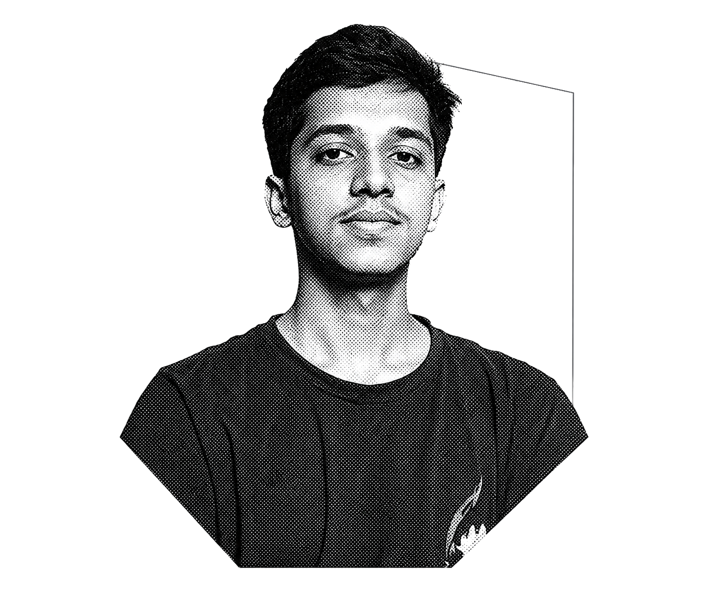
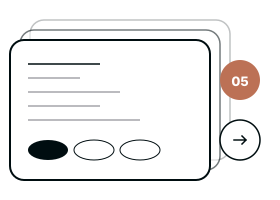
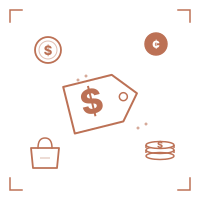
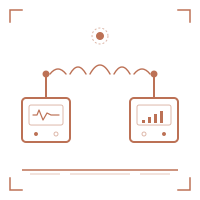
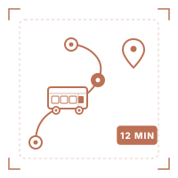
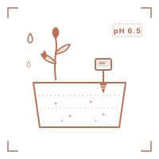
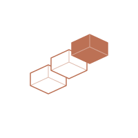
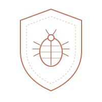
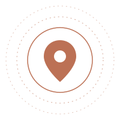

Public repos
A strong GitHub profile with experiments, builds, and unfinished things I'm not afraid to ship anyway.
github.com/zenithkandelDeveloper. Security researcher. Builder of civic tools and off-grid hardware. Seventeen years old, based in Kathmandu, shipping from a quiet room.

PORTRAIT · 2026
I started writing HTML in 2020. The world had gone quiet —
lockdowns, closed schools, an entire childhood paused — and I
opened a YouTube tab and taught myself what
<html> did. I haven't stopped since.
By grade nine I was building crowd-sourced civic tools. By grade eleven I was reporting security flaws to a national news broadcaster. Now I'm in grade twelve, learning the MERN stack, and breaking applications to understand how they think.
I compete in hackathons. I win some. I learn from all of them. I care about three things: shipped products, clean code, and the human on the other end of the screen.
A strong GitHub profile with experiments, builds, and unfinished things I'm not afraid to ship anyway.
github.com/zenithkandelSelected projects in civic tech, IoT, transit, agriculture, and education — all demoed to live judges.
2024 → 2025Responsible disclosures at Kantipur Television and Monkeytype — both reported, both patched upstream.
Vuln researchBorn May 12, 2009. Currently finishing grade twelve at KMSS Bagbazar, Kathmandu, Nepal.
Still learning
Five projects. Each one was built for a real problem, demoed in front of judges, and pushed past the prototype stage. They live in hackathon halls and school exhibitions — not in tutorial folders.

A crowd-sourced price index for everyday goods. Users report what they paid, the system aggregates prices by locality, and shoppers see whether they're about to get scammed at the bazaar. Built to fight the opacity of Kathmandu's informal markets.

An off-grid, RF-based emergency signal system. When there's no cellular coverage — landslides, remote valleys, the post-quake window — Lifeline transmits short distress beacons across radio so a receiver in a populated area can relay them to first responders.

A complete public transport companion for Kathmandu. Enter where you are, enter where you want to go, and Sawari hands you the full walkthrough — the bus, the route, the fare, the road condition, the ETA. Built around the city's actual, chaotic network.

A soil monitoring and crop recommendation rig. Sensor arrays measure moisture, pH, and nutrients in the field; AgroPan returns a crop recommendation tailored to what's actually in the ground — not what the seed shop is selling.
A smart attendance system for Nepali schools. Every student taps their ID card on an RFID reader at the gate, attendance is logged instantly, and class teachers see who's actually in the room. Built to replace the paper register that's still standard here.

I started with the boring fundamentals and I still respect them. The list grows on purpose — only when something earns its place in a real project.

Bug hunting is a way of reading. Every application is a story about assumptions — some of those assumptions are wrong. Below are the ones I found and disclosed.
A critical issue on the website of one of Nepal's largest news broadcasters. Reported through the proper disclosure channel, acknowledged, and patched upstream.
A flaw in the popular open-source typing utility used by tens of thousands of typists worldwide. Reported, acknowledged, and patched upstream.

Open to collaborations, hackathon teams, internships, and interesting security disclosures. If you're working on something that actually matters to people, I'd like to hear about it.